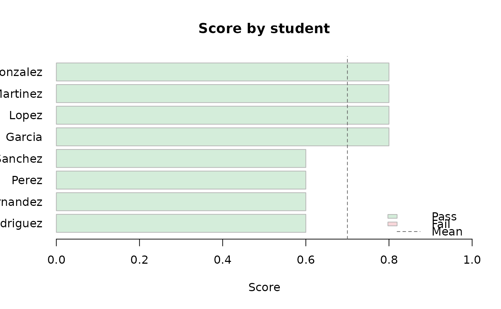
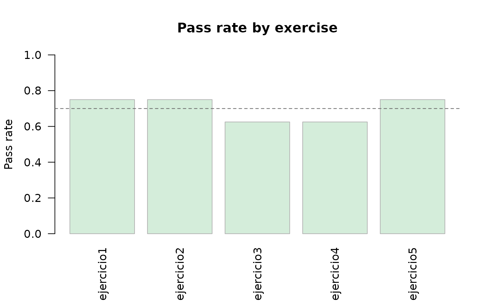
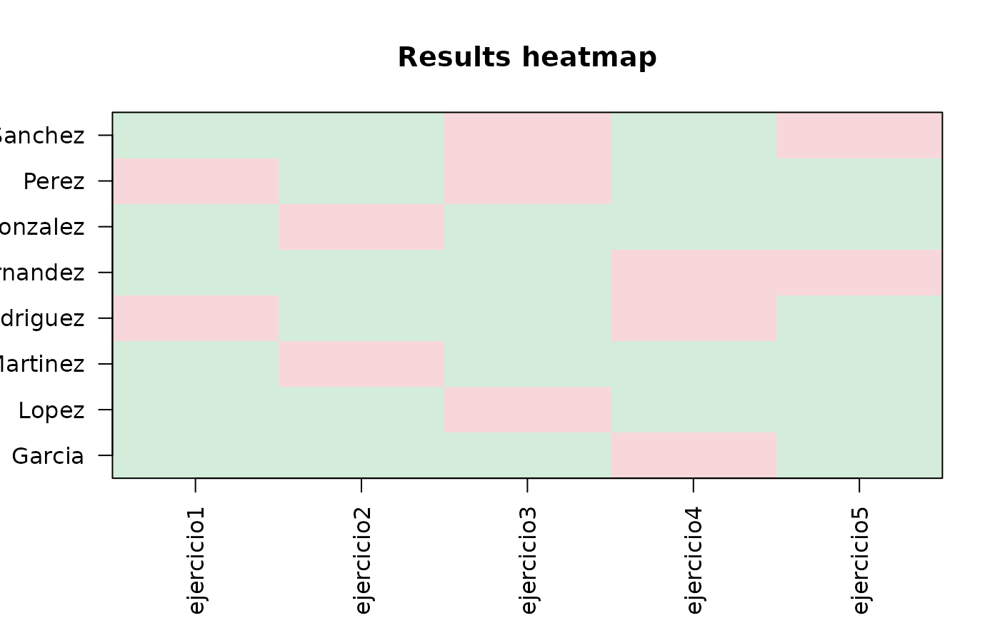

Genera tres gráficos, uno después del otro:
Puntajes de los estudiantes ordenados (gráfico de barras horizontales).
Porcentaje de aprobación por ejercicio (gráfico de barras).
Mapa de calor de pass/fail (estudiantes x ejercicios).
Usage
plot_report(
results,
ask = interactive(),
backend = c("base", "ggplot2"),
scoring = c("all", "partial"),
weights = NULL
)Arguments
- results
Un objeto grade_results. English: A grade_results object.
- ask
Si es
TRUE(por defecto en sesiones interactivas), hace una pausa entre gráficos. PasáFALSEcuando dibujás en un dispositivo de archivo (PDF, PNG, etc.). English: IfTRUE(default in interactive sessions), pause between plots. PassFALSEwhen rendering to a file device (PDF, PNG, etc.).- backend
"base"(por defecto) usa los gráficos base de R, sin dependencias extra."ggplot2"usa ggplot2 si está instalado. Si no, vuelve a R base con una advertencia. English:"base"(default) uses base graphics, no extra dependencies."ggplot2"uses ggplot2 when installed and falls back to base R with a warning otherwise.- scoring, weights
Cómo los dos gráficos de barras calculan el puntaje de estudiantes y ejercicios. Mirá
grade_report(). El mapa de calor siempre muestra pass/fail. English: How the two bar charts score students and exercises. Seegrade_report(). The heatmap always shows pass/fail.
English
Plot a visual summary of grading results. Produces three plots in sequence:
Student scores ranked (horizontal bar chart).
Pass rate per exercise (bar chart).
Pass/fail heatmap (students x exercises).
Examples
plot_report(example_results(), ask = FALSE)


